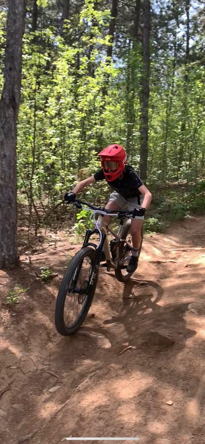

2010
година на раждане
4+
години на колело
DH
любима дисциплина
За мен
Антоан "Tonkata" Василев
Роден през 2010 г. в Стара Загора. От около 4 години карам и отдавна съм намерил своята страст — спусканията и адреналинът, който идва с тях. Състезавам се с MiddleforestTeam Stara Zagora и съм най-бърз на Дерето в Стара Загора.
„Планината е моето място. Там намирам свободата, адреналина и усещането, за което карам отново и отново.
Планинското колоездене за мен не е просто спорт. То е начин да предизвиквам себе си, да търся по трудните линии и да усещам всяко спускане до последния завой.
Обичам скоростта, техничните трасета и моментите, в които трябва да останеш фокусиран и да се довериш на уменията си.
Всяко спускане носи ново предизвикателство. Всяка грешка носи урок. Всеки успешен завой носи усещането, заради което се връщам в планината.
Тук споделям моя път, моите спускания и страстта си към планинското колоездене.“
🚵 Downhill
🏔️ Трасе „Дерето“ — Стара Загора
🛡️ MiddleforestTeam Stara Zagora
Галерия
Снимки & видео
Директно от трасето — обновява се автоматично, щом добавим нови файлове в GitHub.
Зареждане на снимки…
Зареждане на видеа…
Състезания
Резултати & класирания
Кратка история от старта до последното състезание.
Зареждане на резултати…
📄 Пълни протоколи / документи за класиране
Зареждане на документи…
Контакти
Да се свържем
За партньорства, покани за състезания или просто поздрав от трасето.